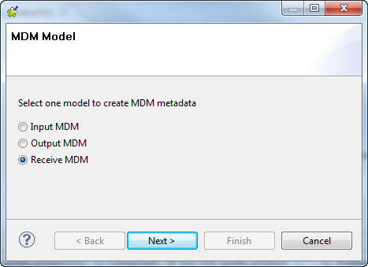
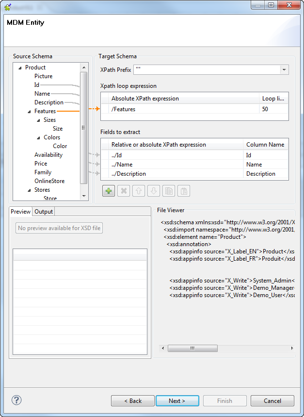
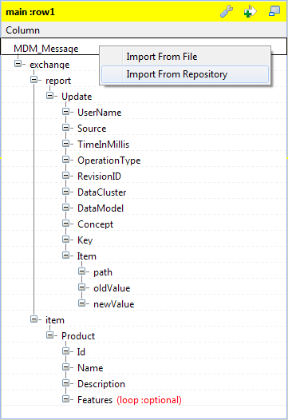
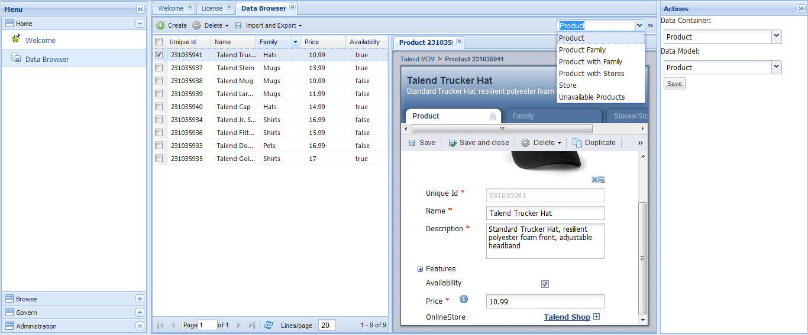
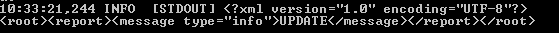

|
Component family |
Talend MDM | |
|
Function |
Once executed, tMDMTriggerInput reads the XML message (Document type) sent by MDM and passes them to the component that follows. NoteThis component works alongside the new trigger service and process plug-in in MDM version 5.0 and higher. The MDM Jobs, triggers and processes developed in previous MDM versions remain supported. However, we recommend using this component when designing new MDM Jobs. | |
|
Purpose |
Every time when you save a change in your MDM, the corresponding change record is generated in XML format. At runtime, this component reads this record and sends the relative information to the following component. With this component, you do not need to configure your Job any more in order to communicate the data changes from MDM to your Job. | |
|
Basic settings |
Property Type |
Either Built-in or Repository. If you are using Talend Open Studio for Big Data, only the Built-in mode is available. |
|
|
|
Built-in: No property data stored centrally. tMDMTriggerInput is expected to use this option in order to apply the default read-only schema. MDM_message is the only column of this schema. |
|
|
|
Repository: Select the repository file where properties are stored. The fields that follow are completed automatically using the fetched data. As tMDMTriggerInput provides a fixed read-only schema, you are expected to use the Built-in option. |
|
|
Schema and Edit Schema |
A schema is a row description, i.e., it defines the number of fields that will be processed and passed on to the next component. The schema is either built-in or remote in the Repository. If you are using Talend Open Studio for Big Data, only the Built-in mode is available. Click Edit Schema to modify the schema. NoteIf you modify the schema, it automatically becomes built-in. |
|
|
|
Built-in: The schema will be created and stored for this component only. Related Topic: see Talend Open Studio User Guide. This is the default option for tMDMTriggerInput. With this option, the read-only schema is used to deal with the XML-format MDM message. |
|
|
|
Repository: The schema already exists and is stored in the repository. You can reuse it in various projects and jobs. Related Topic: see Talend Open Studio User Guide. As tMDMTriggerInput provides a fixed read-only schema, you are expected to use the Built-in option. |
|
Advanced settings |
tStatCatcher Statistics |
Select this check box to gather the processing metadata at the Job level as well as at each component level. |
|
Usage |
Use this component as a start component. It needs an output flow. To receive the message from MDM, you need to deploy the Job using this component on your MDM server and generate the corresponding trigger and process in MDM to invoke this Job. For further information about how to deploy a Job onto MDM server and how to generate a trigger or a process, see Talend Open Studio for MDM Administrator Guide. For further information about how to change a record in MDM, see Talend MDM Web User Interface User Guide. | |
| Limitation | During the deployment of this component on the MDM server, you need to select the Hosted (Zip) type as the format of the deployed Job. If you deploy it in the Distributed (War) type, the relative Job cannot be invoked. For further information about the available types, see Talend Open Studio for MDM Administrator Guide. | |
Warning
This scenario is for reference only. If you are using Talend Open Studio for Big Data, the property type and schema of a component are always built-in, which means you have to drop all the required components from the Palette and configure the component property details and schemas manually.
In this scenario, a four-component Job is used to exchange the event information about a product record. Using an established MDM connection from the Repository, this Job is triggered by Talend Open Studio for MDM once you have updated a product record.
To replicate this scenario, accomplish the following tasks sequentially:
Create an MDM connection of the Receive type in the Repository of the Studio. This connection is to the MDM hub holding the record you want to update.
Create the Job receiving and sending the MDM update message.
Generate the process invoking this Job created.
Update a specific MDM record.
To create the MDM records, model and container used in this scenario, you can execute the Jobs in the MDM demo project in the integration Studio and then update the MDM server to deploy the objects thus created for them to be taken into account at runtime. You will use this server all through this scenario.
For further information about how to import a demo project, see Talend Open Studio User Guide.
For further information about how to update the server for deploying objects, see Talend Open Studio for MDM Administrator Guide.
For further information about an MDM event and the event management, see Talend Open Studio for MDM Administrator Guide.
Procedure 20.1. Establishing the connection
Launch the MDM server with which you need to communicate the update message.
In the Integration perspective of the Studio, expand the Metadata node in the Repository.
Right-click the Talend MDM item and select Create MDM connection.

Enter the Name you want to use for this connection and if required, added the Purpose and the Description in the corresponding fields. For example, we name this connection as receive_update.
In the Next step, enter the authentication information used to connect to the MDM web service through which you manage the record to be updated.
Once you click the Check button and the connection is shown successful, the Next button becomes clickable.

In the Next step, select the Version, the Data model and the Data Container used by the record to be updated. In this scenario, the model and the container are both Product.
Click Finish to validate the creation. The connection created appears under the Metadata node in the Repository.
Procedure 20.2. Retrieving entities
Right-click the connection created and from the contextual menu, select Retrieve entities. Then the wizard appears.
Select Receive MDM and click Next to continue.
Select the entity to be retrieved. In this scenario, it is Product. Then the name field is entered automatically.

In the Next step, drop the elements you need to retrieve from the Source Schema area to the Target Schema area. In this scenario, the Features element is the loop and the Id, the Name and the Description elements are the fields to extract.
In the Next step, if required, change the description of the schema retrieved; otherwise, click Finish to finalize retrieving this entity. In this scenario, we keep the default schema description and click Finish.
The schema of the product entity is retrieved. For further information about the container and the data model used by the MDM, see Talend Open Studio for MDM Administrator Guide.
Procedure 20.3. Linking the components
In the Integration perspective of the Studio, select Create Job from the Job Design node in the Repository tree view. Then the New Job wizard appears.

Name this new Job and click Finish to close the wizard and validate the creation. An empty Job is opened on the workspace of the Studio.
Drop tMDMTriggerInput, tXMLMap, tMDMTriggerOutput and tLogRow from Palette onto the workspace.
Right-click tMDMTriggerInput and from the contextual menu, select the Row > Main link to connect it to tXMLMap.
Do the same to connect tXMLMap to tMDMTriggerOutput. When doing so, a dialog box appears to prompt you to name this link created.

Double-click tMDMTriggerOutput to open its Component view.
Click Edit schema to open the editor.
Select the single pre-defined column of tMDMTriggerOutput, then, click to reproduce this column on the input side (left).
Procedure 20.4. Configuring the transformation of the MDM message
Double-click tXMLMap to open its editor.
In the table representing the input flow (up-left of the editor), right-click the column name MDM_Message on the top of the XML tree and select Import from repository. The [Metadata] wizard appears.
Select the entity schema retrieved earlier using the Receive MDM model, then click OK. In this scenario, the entity schema is ProductReceive.
A dialog box appears prompting you to add the schema of the Update Report to the input XML tree. Click OK to accept it. This builds a complete input document for an MDM event. In the input XML tree, the Features element is set as loop element automatically.
In the table representing the output flow (up-right of the editor), develop the output XML tree as presented in the figure below. This tree is constructed depending on the required static model of the MDM output report.

Note
The XML construct required to return the validation-success message is
<report><message type="info">message</message></report>The XML construct required to return the validation-failure message is
<report><message type="error">message</message></report>Map the OperationType element on the input side with the message element on the output side. This will output the information about the type of the event occurring on the MDM record.
To get more information, you can build the concatenation of the input elements you need to extract in the Expression column of this message element. Both tMap and tXMLMap allow you to edit expressions using the expression editor. For further information about how to edit an expression, see Talend Open Studio User Guide.
In the Expression column, enter
"info"in the row corresponding to @type.Click the pincer icon to display the output settings panel, then set the All in one option as true.
Click OK to close the editor and validate these changes.
Double click tLogRow to open its Component view, then, click Sync columns.
This Job is finalized. For further information about the input document and the output report of an MDM event, see Talend Open Studio for MDM Administrator Guide.
Procedure 20.5. Deploying the Job to be called onto the MDM server
Switch to the MDM perspective by clicking the corresponding button in the up-right corner of the Studio.
In MDM Repository, click the refresh button so that the Job created appears under the Job Designs node of this Repository's tree view.
Right-click this Job created, update_product in this scenario, and from the contextual menu, select Deploy to in order to deploy it to the MDM server.

The deployment wizard appears. From the server list, select the MDM server you are using, then click OK.
In the [Deploy to Talend MDM] window that pops up, select the Export type and the Context scripts for the Job to be deployed. In this scenario, keep the default settings: Export type is Hosted (zip) and Context scripts is Default.
For further information about these settings, see Talend Open Studio for MDM Administrator Guide.
Click Finish to validate these settings and start the deployment. When the deployment is done, a message box pops up to indicate that the deployment is successful.

Click OK to close this message box, then a window pops up to list the objects deployed. In this scenario, it is the Job, update_product.

Click OK to terminate the deployment procedure.
Procedure 20.6. Generating the process used to call the Job
Right-click the Job update_product again and select Generate Talend Job Caller Process from the contextual menu.
In the pop-up window, keep the default settings for this scenario: Integrated and Embedded. For further information about the available options in this window, see Talend Open Studio for MDM Administrator Guide.

Click Generate to start the generation. Once done, a process named CallJob_update_product appears under the Process node in MDM Repository.
Right-click this process, then select Deploy to from the contextual menu to deploy it onto the MDM server.
In the pop-up wizard, select the server you are using, then , click OK to open the window listing the objects deployed.

Click OK to close this window and finalize the deployment. The question mark disappears from the icon of this process.
In MDM Repository, right-click the CallJob_update_prodcut process, then select Rename from the contextual menu.
In the pop-up window, rename this process as beforeSaving_update_product depending on the required process naming pattern. Then click OK to validate it.
Deploy this process again as described earlier.
Log in the web service of the MDM hub you are using.
In the Actions panel on the right side, verify the Data Container and the Data Model you are using are both Product.
In the Data Browser page, launch the search in the product entities so as to list all the available product records
Select the product record you need to update from the list, for example, Talend Trucker Hat. The details of this record appears in the Product tab view.
Update one of its attributes. For example, update the price to 11.00, then click Save.
The message about the operation type of this event has been sent to the MDM server and thanks to tLogRow, this message is displayed on the window of this MDM server.

For further information about how to use the MDM web service, see Talend MDM Web User Interface User Guide